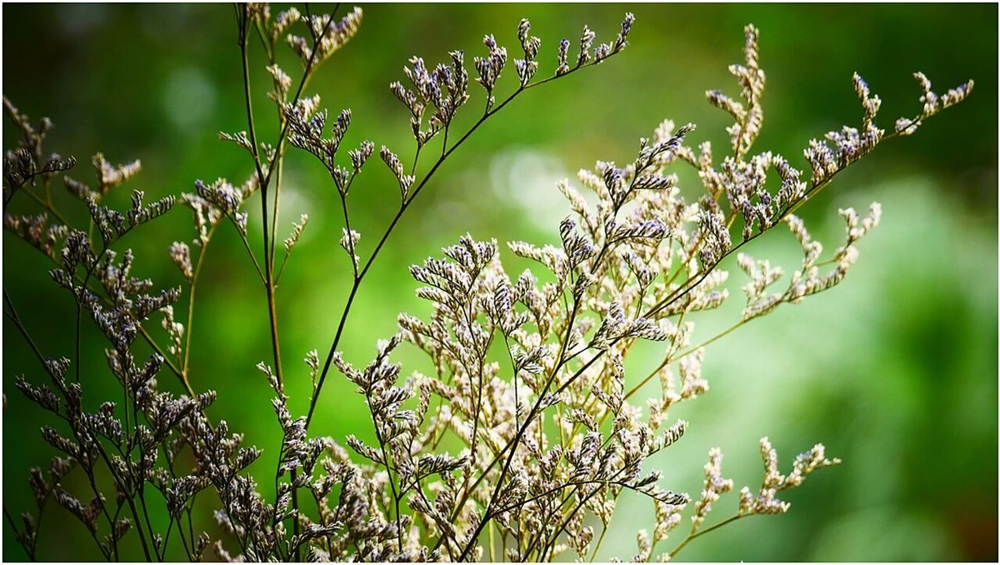

口コミ
口コミ
このページは、口コミを載せる場合のイメージをご覧いただくためのものです。
以下はサンプルとして制作側が作成したイメージ例であり、実際のお客様の声ではありません。

イメージ例一度、ゆっくり立ち寄ってみたいなと思います。
イメージ例どんなお店なのか、ページで分かったらうれしいな。
イメージ例営業時間や場所がすぐ分かるページだったら、友人にも教えたいと思います。

写真はフリー素材のイメージで、店舗の実際の写真ではありません。他地域で撮影されたもの、撮影地が不明なものを含みます。